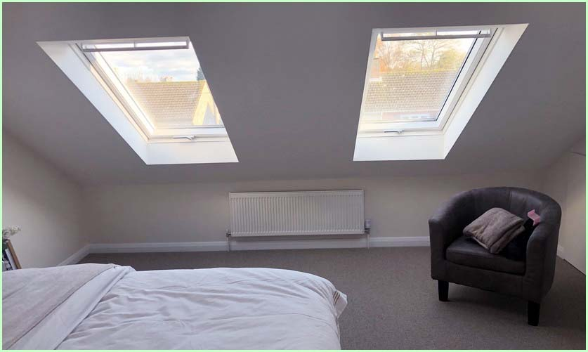

What is a VELUX Loft Conversion?
At its core, a VELUX loft conversion is a way of transforming an unused attic space into a habitable room, such as a bedroom, office, or playroom, by incorporating VELUX roof windows. These windows are designed to fit seamlessly into the slope of your roof, flooding your new space with natural light and providing ventilation.
Benefits of Opting for VELUX Windows:Benefits of Opting for VELUX Windows
* Natural Light and Ventilation: The primary advantage of VELUX windows is the abundance of natural light and fresh air they bring into your home. * Energy Efficiency: These windows are designed to be energy-efficient, helping to keep your loft conversion warm in the winter and cool in the summer. * Variety of Designs: VELUX offers a wide range of window designs and sizes to fit your specific needs and preferences.Planning Your VELUX Loft Conversion
Before you start dreaming of your new space, there are a few crucial steps to consider.
Assessing Your Loft Space First, you need to determine if your loft is suitable for conversion. Important factors include the height of the loft, the pitch of the roof, and the structure of the roof. It's often a good idea to consult with a professional to assess the feasibility of your project
Anticipate Reactions: Leverage advocates and address potential detractors. Offer your supervisor insights on how you've assisted others in the room with their goals.
Understanding the Regulations
Loft conversions generally require planning permission, especially if you're altering the shape of the roof. However, VELUX conversions are often considered permitted development, meaning they don’t usually need planning permission. You will still need to comply with building regulations to ensure the space is safe and habitable.
Choosing the Right Windows The type and size of VELUX windows you choose will significantly affect the look and feel of your new space. Consider factors like the direction your windows will face, the slope of your roof, and how you plan to use the room to make the best choice.
The Conversion Process Turning your dusty attic into a bright and airy room involves several key steps.
Design and PlanningWorking with an architect or a specialist loft conversion company can help you design a space that maximizes light, space, and functionality. This is also the time to decide where to place your VELUX windows for the best effect.
 To go places and do things that have never been done before – that’s what living is all about.